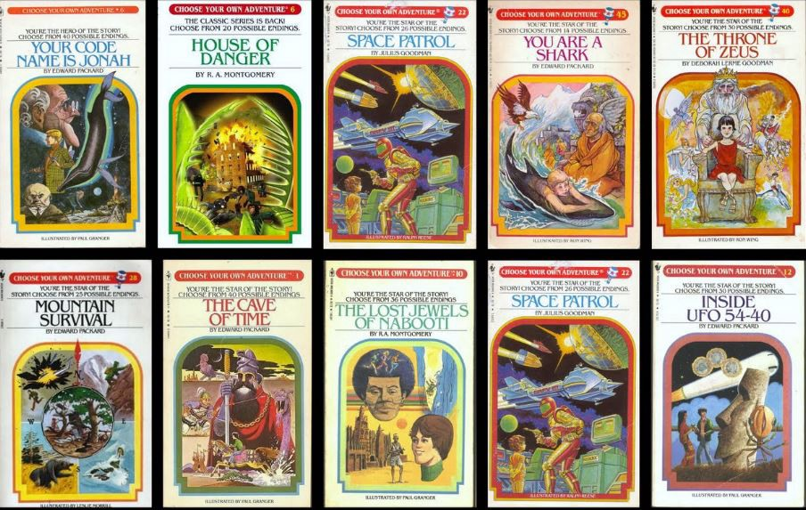

Welcome to class!
The Data Science Process: Day 3
Today’s Outline:
- Data Science Solutions
- Reproducible Research
- The Semester Project
- Looking Ahead
A Data Science Problem
“Can you help us optimize our sales funnel and improve our conversion rates?”.
- You say “yes” and go back to your office to get to work.
- Then what?
- What does a solution to this problem look like?
Does this help?
“When a non-technical supervisor asks you to solve a data problem, the description of your task can be quite ambiguous at first. It is up to you, as the data scientist, to translate the task into a concrete problem, figure out how to solve it and present the solution back to all of your stakeholders.”.
What about this?
“All the analysis and technical results that you come up with are of little value unless you can explain to your stakeholders what they mean, in a way that’s comprehensible and compelling. Data storytelling is a critical and underrated skill that you will build and use here.”.
What exactly is a data science solution?
Step One: Frame the Problem
What exactly is a data science solution?
Step 6: Communicate Your Findings
“You now have an amazing machine learning model that can predict, with high accuracy, how likely a prospective customer is to buy Hotshot’s product. But how do you convey its awesomeness to your client, the VP of Sales? How do you present your results to her in a form that she can use?”
What exactly is a data science solution?
Step 6: Communicate Your Findings
“Communication is one of the most underrated skills a data scientist can have. While some of your colleagues (engineers, for example) can get away with being siloed in their technical bubbles, data scientists must be able to communicate with other teams and effectively translate their work for maximum impact. This set of skills is often called ‘data storytelling.’”
What exactly is a data science solution?
Go back and read Step 6 in the article. What are the deliverables?
- Current deliverables:
- A spreadsheet, with “current prospects” ranked
- A face-to-face conversation where you “walk her through your conclusions”
- A verbal recommendation
- Future deliverables:
- A face-to-face conversation with VP of marketing
- A couple of slides “summarizing results and recommendations” to be presented at a board meeting
Data Science Solutions
What else could a data science solution look like?
A Data Science Solution
“Boom! You’ve had an amazing impact on your first project! You’ve successfully finished your first data science project at work.”
How do you know if your data science solution is successful?
- Here are some of my ideas:
- Your boss is happy (maybe not a great metric to use?)
- You answered the questions (framed in Step 1)
- Your solution provides your boss/client with enough information that she or he can clearly see the next step forward
Are you sure?
Let’s extend the story:
- The VP of Sales is so excited about what your work that she brings on another analyst to help continue the project.
- To get up to speed on the project, the new analyst tries to answer the same questions you did.
- She comes up with completely different answers.
- Now what?
Are you sure?
Why should other people trust your insights?
How can you be sure your results are reliable?
Replication
- Can ye feel so now?
- Replication crisis
- If you can’t replicate, then what? (until 4:04)
- Warning: The meaning of replication and reproduction are often switched
- Warning: An analysis can be reproducible and still be wrong
Reproducible Research
Close your eyes
Beethoven’s Symphony No. 5
Composed early 1880s. This image is from 1862. Spotify songs from 1983 and 2021.
What is the “score” of your data science solution?
This is what happens when you work in a silo.
Reproducible Research Checklist
“How you got to the end is just as important as the end itself.”
via Roger Peng
- DON’T do things by hand
- DON’t point and click
- DON’T save output
- DO teach a computer (almost guarantees reproducibility)
- DO use version control
- DO keep track of your software environment (aka,
sessionInfo()) - DO think about the entire pipeline (raw data -> clean data -> analysis -> report)
The Semester Project
Choose Your Own Adventure

Minimum Requirements
Show me you know how to:
- Import and (if needed) combine data sets (weeks 5 and 6)
- Wrangle data to get it in the proper format (weeks 4+)
- Use visualizations to provide clear insights (weeks 3 and 7)
- Communicate your results in a compelling story (all semester)
But Sister Larson, what do I need to submit?!?"
- You decide.
- What solution format is the most useful for this data science problem?
- Slightly more helpful answer: Probably an R Markdown report. Anything else you’ll have to learn on your own.
- At the end of the semester, you’ll present your project in front of the class.
Picking a topic (Case Study 2)
- Keep in mind that not all questions can be (easily) answered with data.
- Pick a question that can be answered by the end of the semester.
Want to see my current project?
Looking Ahead
Upcoming Assignments
- Case Study 2 (Saturday)
- Task 5 (Tuesday)
- Reading only
- Try taking reading notes in the
readme.mdfile in your repo’s week 3 folder.
A note on week 3
Week 3 is all about the ggplot package and visualizing data.
This is the goal: